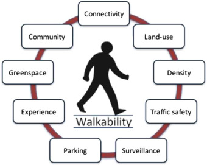

What Determines Walkability?
Walkability doesn’t really have one standard definition that everyone uses, but there are several elements that make up walkability, including safe and separated pedestrian infrastructure, safe pedestrian crossings, providing accessibility to the less-abled, high density and access to and accomodation of a variety of transportation methods including walking (obviously), cycling, buses, trams, trains, and cars. Walkability doesn’t just mean excluding cars. There are many benefits to walkability, including a healthier populace, cleaner environment, and stronger economy. Check out the first link to find out more.